자동차정비산업기사 (2013-08-18 기출문제)
1과목: 일반기계공학
1. 웜기어장치에서 회전수 1500rpm인 3줄 웜이 잇수 30개인 웜힐(웜기어)에 물려 돌고 있다면, 이 때 웜 휠의 회전수는 몇 rpm인가?
- 50
- 150
- 180
- 280
(정답률: 71%)

2. 강판의 두께 12㎜, 리벳의 지름 20㎜, 피치 50㎜의 1줄 겹치기 리벳이음에서 1피치 당 하중이 12kN일 경우, 강판의 인장응력은 몇 N/mm2인가?
- 33.3
- 64.2
- 75.3
- 86.1
(정답률: 35%)
3. 원형 단면 봉에 축방향으로 하중이 작용할 때 발생하는 인장응력을 구하는 식으로 옳은 것은?
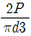
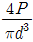
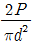
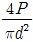
(정답률: 46%)
4. 다음 금긋기용 공구 중 가공물의 중심을 잡거나 정반위에서 가공물을 이동시켜 평행선을 그을 때 사용되는 공구의 명칭은?
- 리머
- 펀치
- 서피스 게이지
- 스크레이퍼
(정답률: 71%)
5. 프레스가공에서 굽힘작업에 속하지 않는 것은?
- 비딩(beading)
- 플랜징(flanging)
- 엠보싱(embossing)
- 셰이빙(shaving)
(정답률: 70%)
6. 기계 구조물에 여러 하중이 각각 작용할 때, 일반적으로 안전율을 가장 크게 설계해야 하는 하중의 형태는?
- 정하중
- 반복하중
- 충격하중
- 교번하중
(정답률: 87%)
7. 유압펌프의 종류 중 회전식이 아닌 것은?
- 피스톤 펌프
- 기어 펌프
- 베인 펌프
- 나사 펌프
(정답률: 78%)
8. 담금질한 강에 인성을 갖게 하기 위하여 A1변태점 이하의 일정 온도로 가열하는 열처리는?
- 풀림(annealing)
- 불림(normalizing)
- 뜨임(tempering)
- 염욕 열처리(salt bath treatment)
(정답률: 65%)
9. 기본부하용량이 18000N인 볼 베어링이 베어링 하중을 2000N을 받고 150rpm으로 회전할 때 이 베어링의 수명은 약 몇 시간인가?
- 62000
- 71000
- 76000
- 81000
(정답률: 43%)
10. 유압유에 요구되는 성질로 가장 거리가 먼 것은?
- 마찰면에 윤활성이 좋을 것
- 이물질을 신속히 흡수할 수 있을 것
- 적정한 점도가 있을 것
- 산화에 대하여 안정성이 있을 것
(정답률: 82%)
11. 바닥이 넓은 축열실(蓄熱室) 반사로를 사용하여 선철을 용해, 정련 하는 제강법은?
- 평로
- 전기로
- 전로
- 용광로
(정답률: 80%)
12. 동력을 전달하는 축의 강도설계에서 굽힘과 비틀림을 함께 받는 중실축의 최대 전단응력(rmax)은? (단, 굽힘 모멘트는 M이고, 비틀림 모멘트는 T이며, 중실축의 지름은 d이다.)
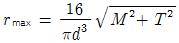
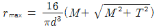
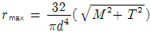
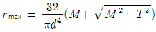
(정답률: 52%)
13. 드릴로 뚫은 구멍을 정확한 치수로 다듬는데 사용되는 공구수는?
- 탭
- 다이스
- 정
- 리머
(정답률: 70%)
14. 강제 원형봉을 토션바(torsion bar)로 사용하고자 할 때 원형봉에 발생하는 최대 전단응력에 대한 설명으로 틀린 것은?(단, 여기서는 원형봉에 발생하는 최대 전단응력, 원형봉의 지름, 길이, 재질, 비틀림 각도만을 고려하며, 각 보기항목에서 지시하지 않는 다른 항목은 일정하다고 가정한다.)(오류 신고가 접수된 문제입니다. 반드시 정답과 해설을 확인하시기 바랍니다.)
- 최대 전단응력은 비틀림 각에 비례한다.
- 최대 전단응력은 원형 봉의 길이에 비례한다.
- 최대 전단응력은 전단탄성계수에 반비례한다.
- 최대 전단응력은 원형봉 지름에 비례한다.
(정답률: 59%)
15. 유압기기의 부속장치 중 유압에너지 압력에 대해 맥동제거, 압력보상, 충격 완화 등의 역할을 하는 것은?
- 스트레이너
- 패킹
- 어큐물레이터
- 필터 엘리먼트
(정답률: 82%)
16. 자동차부품, 전동기부품, 가정용 공구, 기계 및 공구 등에 사용되는 다이캐스팅용 Al합금의 요구되는 성질 중 틀린 것은?
- 유동성이 좋을 것
- 응고수축에 대한 용탕 보급성이 좋을 것
- 열간메짐이 클 것
- 금형에 점착하지 않을 것
(정답률: 75%)
17. 안지름이 1m인 압력용기에 5N/cm2의 내압이 작용하고 있다. 압력용기의 뚜껑을 18개의 볼트로 체결할 경우 다음 중에서 사용 가능한 가장 작은 볼트는? (단, 볼트 지름방향의 허용인장응력은 1000N/cm2이고, 볼트에는 인장하중만 작용한다.)
- M14 (골지름 11.835mm)
- M22 (골지름 19.294mm)
- M27 (골지름 23.752mm)
- M36 (골지름 31.670mm)
(정답률: 55%)
18. 다음 중 원추 클러치의 설명으로 틀린 것은?
- 마찰 클러치의 한 종류이다.
- 주동축의 운전 중에도 단속이 가능하다.
- 갑자기 큰 토크가 걸리면 미끄럼이 일어나 안전장치의 작용을 할 수 있다.
- 클러치의 재료는 온도상승에 의한 마찰계수 변화가 큰 것이 좋다.
(정답률: 77%)
19. 피복금속 아크용접에서 용입 불량이 나타나는 원인으로 거리가 먼 것은?
- 이음설계에 결함이 있을 때
- 용접 속도가 너무 느릴 때
- 용접 전류가 너무 낮을 때
- 용접봉 선택이 불량할 때
(정답률: 61%)
20. 주철 조직에 유리 탄소(free carbon)와 Fe3C가 혼재하고 있으며, 주조와 절삭이 쉬워 일반가공기계의 베드용으로 사용되는 보통 주철은?
- 회주철
- 백주철
- 반주철
- 페라이트주철
(정답률: 69%)
2과목: 자동차엔진
21. 운행하는 자동차의 소음측정 항목으로 맞는 것은?
- 배기소음
- 엔진소음
- 진동소음
- 가속출력소음
(정답률: 74%)
22. 다음 그림은 스로틀 포지션 센서(TPS)의 내부회로도이다. 스로틀 밸브다 그림에서 B와 같이 닫혀 있는 현재 상태의 출력전압은 약 몇 V인가? (단, 공회전 상태이다.)
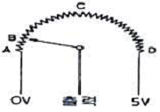
- 0V
- 약 0.5V
- 약 2.5V
- 약 5V
(정답률: 86%)
23. 자동차기관의 유효압력에 대한 설명으로 틀린 것은?
- 도시평균 유효압력 = 이론평균 유효압력 × 선도계수
- 평균 유효압력 = 1사이클의 일 ÷ 실린더 용적
- 제동평균 유효압력 = 도시평균 유효압력 × 기계효율
- 마찰손실 평균 유효압력 = 도시평균 유효압력 - 제동 평균 유효압력
(정답률: 52%)
24. LPG(Liquefied Petroleum Gas)차량의 특성 중 장점이 아닌 것은?
- 엔진 연소실에 카본의 퇴적이 거의 없어 스파크 플러그의 수명이 연장된다.
- 엔진 오일의 가솔린과는 달리 연료에 의해 희석되므로 실린더의 마모가 적고 오일교환 기간이 연장된다.
- 가솔린에 비해 쉽게 기화되므로 연소가 균일하여 엔진 소음이 적다.
- 베이퍼록(vapor lock)과 퍼콜레이션(percolation) 등이 발생하지 않는다.
(정답률: 59%)
25. 기관 시험 장비를 사용하여 점화코일의 1차 파형을 점검한 결과 그림과 같다면 파워 TR이 ON되는 구간은?
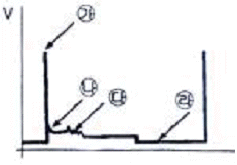
- 가
- 나
- 다
- 라
(정답률: 64%)
26. 가솔린엔진에서 온도게이지가 “HOT” 위치에 있을 경우 점검해야 하는 사항으로 가장 거리가 먼 것은?
- 냉각 전동 팬 작동상태
- 라디에이터의 막힘 상태
- 수온센서 혹은 수온스위치의 작동상태
- 부동액의 농도 상태
(정답률: 78%)
27. 배기량 400cc, 연소실 체적 50cc인 가솔린 기관에서 rpm이 3000r/m이고, 축토크가 8.95kgf-m일 때 축출력은?
- 약 15.5 PS
- 약 35.1 PS
- 약 37.5 PS
- 약 38.1 PS
(정답률: 54%)
28. 열역학 제2법칙의 표현으로 적당하지 못한 것은?
- 열은 저온의 물체로부터 고온의 물체로 이동하지 않는다.
- 제2종의 영구 운동 기관은 존재한다.
- 열기관에서 동작 유체에 일을 시키려면 이것보다 더 저온인 물체가 필요하다.
- 마찰에 의하여 열을 발생하는 변화를 완전한 가역 변화로 할 수 있는 방법은 없다.
(정답률: 65%)
29. 전자제어 가솔린기관의 인젝터 분사시간에 대한 설명 중 틀린 것은?
- 기관을 급 가속할 때에는 순간적으로 분사시간이 길어진다.
- 축전지 전압이 낮으면 무효 분사시간이 짧아진다.
- 기관을 급 감속할 때에는 순간적으로 분사가 정지되기도 한다.
- 지르코니아 산소센서의 전압이 높으면 분사시간이 짧아진다.
(정답률: 63%)
30. 전자제어 가솔린기관에서 연료 분사량을 결정하기 위해 고려해야 할 사항과 가장 거리가 먼 것은?
- 점화전압
- 흡입공기 질량
- 목표 공연비
- 대기압력
(정답률: 58%)
31. 피스톤 핀을 피스톤 중심으로부터 오프셋(offset)하여 위치하게 하는 이유는?
- 피스톤을 가볍게 하기 위하여
- 옥탄가를 높이기 위하여
- 피스톤 슬랩을 감소시키기 위하여
- 피스톤 핀의 직경을 크게 하기 위하여
(정답률: 81%)
32. 전자제어 압축천연가스(CNG) 자동차의 기관에서 사용하지 않는 것은?
- 연료 온도센서
- 연료펌프
- 연료압력 조절기
- 습도센서
(정답률: 63%)
33. 전자제어 가솔린장치에서 (-)duty 제어타입 액추에이터(actuator)의 작동 사이클 중 (-)duty가 40%인 경우의 설명으로 옳은 것은?
- 한 사이클 중 작동하는 시간의 비율이 60%이다.
- 한 사이클 중 분사시간의 비율이 60%이다.
- 전류 통전시간 비율이 40%이다.
- 전류 비통전시간 비율이 40%이다.
(정답률: 73%)
34. 차량의 경음기 소음을 측정한 결과 86dB이며, 암소음이 82dB이었다면, 이때의 보정치를 적용한 경음기의 소음은?
- 83dB
- 84dB
- 86dB
- 88dB
(정답률: 81%)
35. 디젤기관에서 연료 분사량이 부족한 원인이 아닌 것은?
- 딜리버리 밸브의 접촉이 불량하다.
- 분사펌프 플런저가 마멸되어있다.
- 딜리버리 밸브 시트가 손상되어있다.
- 기관의 회전속도가 낮다.
(정답률: 65%)
36. 전자제어 가솔린 분사장치의 점화시기 제어에 대한 설명 중 틀린 것은?
- 통전시간 제어란 파워 TR이 “ON”되는 시간이며 드웰각 제어 또는 폐각도 제어라고 한다.
- 기본점화시기 제어란 기본분사 신호와 엔진회전수 및 ECU의 ROM내에 맵핑된 점화시기이다.
- 크랭크 각 1˚의 시간이란 크랭크 각 1주기의 시간을 180으로 나눈 시간이다.
- 한 실린더 당 2개 이상의 점화코일을 사용하는 것은 파워 TR이 ON 되는 시간을 짧게 할 수 있어 그만큼 통전시간을 길게 하는 장점이 있다.
(정답률: 62%)
37. 가솔린 기관에서 압축비 ε=7, 비열비 k=1.4일 경우 이론 열효율은 약 얼마인가?
- 45.4%
- 59.3%
- 48.5%
- 54.1%
(정답률: 46%)
38. 삼원 촉매장치를 장착하는 근본적인 이유는?
- HC, CO, NOX를 저감하기 위하여
- CO2, N2, H2O를 저감하기 위하여
- HC, SOX를 저감하기 위하여
- H2O, SO2, CO2를 저감하기 위하여
(정답률: 87%)
39. 전자제어 가솔린기관의 인젝터에 관한 설명 중 틀린 것은?
- 인젝터의 분사신호는 ECU제어에 따라 이루어진다.
- 인젝터는 구동 방식에 따라 전압제어식과 전류제어식으로 구분한다.
- 인젝터는 연료펌프의 압력이 일정 이상 걸릴 때 연료가 분사되는 구조로 되어있다.
- 저 저항 방식의 인젝터는 레지스터를 사용하고 전압제어식이라고도 부른다.
(정답률: 52%)
40. 가솔린 기관에서 노크 센서를 사용하는 가장 큰 이유는?
- 최대 흡입공기량을 좋게 하여 체적효율을 향상시키기 위함이다.
- 노킹 영역을 검출하여 점화시기를 제어하기 위함이다.
- 기관의 최대 출력을 얻기 위함이다.
- 기관의 노킹 영역을 결정하여 이론공연비로 연소시키기 위함이다.
(정답률: 70%)
3과목: 자동차섀시
41. 전자제어 파워스티어링 제어방식이 아닌 것은?
- 유량 제어식
- 실린더 바이패스 제어식
- 유온 반응 제어식
- 밸브 특성 제어식
(정답률: 64%)
42. 자동변속기의 변속선도에 히스테리시스(hysteresis) 작용이 있는 이유로 적당한 것은?
- 변속점 설정 시 속도를 감속시켜 안전을 유지하기 위해서
- 변속점 부근에서 주행할 경우 변속이 빈번하게 일어나 불안정함을 방지하기 위해서
- 증속될 때 변속점이 일치하지 않는 것을 방지하기 위해서
- 감속시 연료의 낭비를 줄이기 위해서
(정답률: 74%)
43. 클러치의 전달 효율에 관한 설명으로 틀린 것은?
- 전달효율은 클러치의 출력회전력에 비례한다.
- 전달효율은 엔진의 발생회전력과 엔진의 회전수에 비례한다.
- 전달효율은 클러치로 들어간 동력에 반비례한다.
- 전달효율은 클러치에서 나온 동력에 비례한다.
(정답률: 49%)
44. 무게 2ton인 화물차량이 20˚ 경사길을 올라갈 때의 전주행 저항은? (단, 구름저항계수 : 0.2)
- 약 560kgf
- 약 1084kgf
- 약 1560kgf
- 약 2025kgf
(정답률: 54%)
45. 추진축의 외경 90mm, 내경 80mm, 길이가 1000mm인 경우 위험 회전수는?
- 1150rpm
- 5732rpm
- 14450rpm
- 17149rpm
(정답률: 51%)
46. 자동변속기의 차량의 점검방법으로 틀린 것은?
- 자동변속기의 오일량은 평탄한 노면에서 측정한다.
- 인히비터 스위치는 N위치에서 점검조정한다.
- 오일량을 측정할 때는 시동을 끄고 약 3분간 기다린 후 점검한다.
- 스톨테스터시 회전수가 기준보다 낮으면 엔진을 점검해본다.
(정답률: 69%)
47. 전자제어 제동장치(ABS)의 장점으로 틀린 것은?
- 안정된 제동효과를 얻을 수 있다.
- 제동시 자동차가 한쪽으로 쏠리는 것을 방지한다.
- 미끄러운 노면에서 제동 시 조향 안정성이 있다.
- 미끄러운 노면에서 출발 시 바퀴의 슬립을 방지한다.
(정답률: 70%)
48. 급격한 가속이나 제동 또는 선회 시에 타이어가 노면과의 사이에 미끄러짐이 발생하면서 나는 소음은?
- 럼블(Rumble)음
- 험(Hum)음
- 스퀄(Squeal)음
- 패턴소음(Pattern Noise)
(정답률: 73%)
49. VDC(vehicle dynamic control) 장치에 대한 설명으로 틀린 것은?
- 스핀 또는 언더 스티어링 등의 발생을 억제하는 장치이다.
- VDC는 ABS제어, TCS제어 기능 등이 포함되어 있으며 요 모멘트 제어와 자동감속제어를 같이 수행한다.
- VDC 장치는 TCS에 요 레이터 센서, G센서, 마스터실린더 압력센서 등을 사용한다.
- 오버 스티어 현상을 더욱 증가시킨다.
(정답률: 82%)
50. 주행 중 조향 휠이 안쪽으로 치우칠 경우 예상되는 원인이 아닌 것은?
- 타이어 편마모
- 파워 오일펌프 벨트의 노화
- 한쪽 앞 코일스프링 약화
- 휠 얼라인먼트 조정 불량
(정답률: 82%)
51. 트럭의 앞차축이 뒤틀어져서 왼쪽 캐스터 각이 0˚, 오른쪽 캐스터 각이 뒤쪽으로 5~6˚가 더 클 때 주행 중 어떤 현상이 일어나겠는가?
- 오른쪽으로 끌리는 경향이 있다.
- 왼쪽으로 끌리는 경향이 있다.
- 정상적으로 조향된다.
- 도로사정에 따라 왼쪽이나 오른쪽으로 끌린다.
(정답률: 60%)
52. 자동변속기 내부에서 링기어와 캐리어가 1개씩, 직경이 다른 선기어 2개, 길이가 다른 피니언 기어가 2개로 조합되어있는 복합 유성기어 형식은?
- 심프슨기어 형식
- 윌슨기어 형식
- 라비뇨기어 형식
- 레펠레티어기어 형식
(정답률: 60%)
53. 그림에서 브레이크 페달의 유격조정 부위로 가장 적합한 곳은?
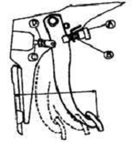
- A와 B
- C와 D
- B와 D
- B와 C
(정답률: 68%)
54. 전자제어 제동장치(ABS) 차량이 통상 제동상태에서 ABS가 작동 순환되는 모드는?
- 압력감소 모드-압력유지 모드-압력상승 모드
- 압력상승 모드-압력유지 모드-압력감소 모드
- 압력유지 모드-압력감소 모드-압력상승 모드
- 압력상승 모드-압력감소 모드-압력유지 모드
(정답률: 56%)
55. 공압식 전자제어 현가장치에서 스캔 툴을 이용하여 강제 구동할 경우에 대한 설명으로 옳은 것은?
- 고속 좌회전 모드로 조작하는 경우 좌측은 올리고 우측은 내리는 제어를 한다.
- 급제동하는 모드로 조작하는 경우 앞 축과 뒤축은 모두 hard쪽으로 제어한다.
- high모드로 조작하면 차고는 상향제어 되면서 감쇄력은 hard쪽으로 제어된다.
- 차량속도가 고속모드인 경우 앞 축과 뒤축 모두 차고를 올림 제어 한다.
(정답률: 55%)
56. 제동장치가 갖추어야 할 조건으로 틀린 것은?
- 최고속도와 차량의 중량에 대하여 항상 충분한 제동력을 발휘할 것
- 신뢰성과 내구성이 우수할 것
- 조작이 간단하고, 운전자에게 피로감을 주지 않을 것
- 고속주행 상태에서 급제동시 모든 바퀴의 제동력이 동일하게 작용할 것
(정답률: 80%)
57. 액슬축의 회전수가 900rpm이고, 바퀴의 유효반지름이 300mm일 때 자동차의 시속은?
- 약 92km/h
- 약 102km/h
- 약 112km/h
- 약 122km/h
(정답률: 50%)
58. 구동륜의 타이어 치수가 비정상일 때 나타날 수 있는 현상으로 거리가 먼 것은?
- 연비변화
- 타이어 이상마모
- 차고변화
- 변속기 소음
(정답률: 77%)
59. 조향장치에 대한 설명으로 틀린 것은?
- 회전 반경이 되도록 크게 하여 전복되지 않게 한다.
- 조향 조작이 경쾌하고 자유로워야 한다.
- 노면으로부터의 충격이나 원심력 등의 영향을 받지 않아야 한다.
- 타이어 및 조향장치의 내구성이 커야한다.
(정답률: 79%)
60. 타이어의 회전 반경이 0.3m인 자동차에서 타이어의 회전수가 800rpm으로 달릴 때 회전토크가 15kgf·m이라면 구동력은?
- 45kgf
- 50kgf
- 60kgf
- 70kgf
(정답률: 42%)
4과목: 자동차전기
61. 충전장치 정비 시에 안전에 위배되는 것은?
- 급속충전기로 충전을 하기 전에 점화스위치를 OFF하고 배터리 케이블을 분리한다.
- 발전기 B단자를 분리한 후 엔진을 고속회전 하지 않는다.
- 발전기 출력전압이나 전류를 점검할 때는 메가옴테스터를 활용한다.
- 접지 극성에 주의한다.
(정답률: 76%)
62. 자동차용 컴퓨터 통신방식 중 CAN(control-ler area network) 통신에 대한 설명으로 틀린 것은?
- 일종의 자동차 전용 프로토콜이다.
- 전장회로의 이상상태를 컴퓨터를 통해 점검할 수 있다.
- 차량용 통신으로 적합하나 배선수가 현저하게 많다.
- 독일의 로버트 보쉬사가 국제특허를 취득한 컴퓨터 통신방식이다.
(정답률: 82%)
63. 배터리측에서 암전류(방전전류)를 측정하는 방법으로 옳은 것은?
- 배터리 '+'측과 '-'측의 전류가 서로 다르기 때문에 반드시 배터리 '+'측에서만 측정하여야 한다.
- 디지털 멀티 미터를 사용하여 암전류를 점검할 경우 탐침을 배터리 '+'측에서 병렬로 연결한다.
- 클램프 타입 전류계를 이용할 경우 배터리 '+'측과 '-'측 배선 모두 클램프 안에 넣어야 한다.
- 배터리 '+'측과 '-'측 무관하게 한 단자를 탈거하고 멀티미터를 직렬로 연결한다.
(정답률: 58%)
64. 시동 후 냉각수 온도센서(부특성 서미스터)의 출력전압은 수온이 올라감에 따라 어떻게 변화하는가?
- 변화 없다.
- 크게 상, 하로 움직인다.
- 계속 상승하다 일정하게 된다.
- 엔진온도 상승에 따라 전압 값이 감소한다.
(정답률: 74%)
65. 다음 회로에서 릴레이 코일선이 단선되어 릴레이가 작동되지 않는다. 각각 e점, f점의 전압값으로 맞는 것은?
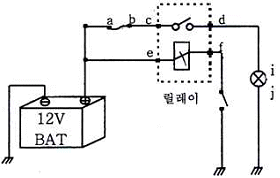
- e : 12, f : 12
- e : 12, f : 0
- e : 0, f : 12
- e : 0, f : 0
(정답률: 72%)
66. 버튼 엔진 시동 시스템에서 주행 중 엔진 정지 또는 시동 꺼짐에 대비하여 FOB키가 없을 경우에도 시동을 허용하기 위한 인증 타이머가 있다. 이 인증 타이머의 시간은?
- 10초
- 20초
- 30초
- 40초
(정답률: 62%)
67. 기계, 기구의 정밀도검사 기준 중 전조등 시험기의 광축편차는 어느 범위의 허용오차이내이어야 하는가?
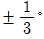
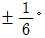
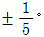
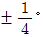
(정답률: 54%)
68. NPN형 파워 TR에서 접지되는 단자는?
- 캐소드
- 이미터
- 베이스
- 컬렉터
(정답률: 70%)
69. 자동차 전조등의 등화중심점이 지상 1120mm 높이로 취부되어 있다. 전조등 주광축의 하향진폭은 전방 10m에서 얼마 이내로 조정되어야 하는가?
- 0.300m
- 0.312m
- 0.336m
- 0.348m
(정답률: 53%)
70. 점화장치에 대한 설명으로 틀린 것은?
- 무접점식 점화장치에서 점화펄스 발생기로 주로 홀센서 또는 유도센서가 사용된다.
- 홀 반도체에 작용하는 자속밀도가 무시해도 좋을 만큼 낮을 때, 홀 전압은 최대가 된다.
- 유도센서에서 펄스 발생용 로터와 스테이터를 형성하는 철심이 마주 볼 때의 공극은 대략 0.5mm정도이다.
- CD(축전기 방전식 점화장치)에서 축전기에 충전되는 에너지 수준은 충전전압의 제곱에 비례한다.
(정답률: 61%)
71. 비상등은 정상 작동되나 좌측방향지시등이 작동하지 않을 때 관련있는 부품은?
- 플래셔 유니트
- 비상등 스위치
- 턴시그널 스위치
- 턴시그널 전구
(정답률: 57%)
72. 하이브리드 자동차에서 엔진정지 금지조건이 아닌 것은?
- 브레이크 부압이 낮은 경우
- 하이브리드 모터 시스템이 고장인 경우
- 엔진의 냉각수 온도가 낮은 경우
- D레인지에서 차속이 발생한 경우
(정답률: 59%)
73. 자동차 냉방 장치의 구성부품 중에서 액화된 고온·고압의 냉매를 저온·저압의 냉매로 만드는 역할을 하는 것은?
- 압축기
- 응축기
- 증발기
- 팽창밸브
(정답률: 62%)
74. 전자동 에어컨장치(Full Auto Conditioning)에서 입력되는 센서가 아닌 것은?
- 대기압센서
- 실내온도센서
- 핀써모센서
- 일사량센서
(정답률: 60%)
75. 12V용 24W 방향지시등 전구의 저항을 단품 측정하였더니 약 0.5 ~ 1Ω정도가 측정되었을 경우, 전구의 상태 판단으로 가장 적합한 것은?
- 일반적으로는 정상이라고 판단할 수 있다.
- 전구 내부에서 단락된 것이다.
- 전구의 저항이 커진 것이다.
- 전구의 필라멘트가 단선되었다.
(정답률: 72%)
76. 방향지시등의 점멸 주기가 빨라지는 원인이 아닌 것은?
- 충전전압이 높아 회로 내 전압이 높게 걸린다.
- 방향지시등 회로와 후진등 회로가 단락되었다.
- 플래셔 유닛의 고장이나 제원이 다르다.
- 램프의 저항이 규정값보다 낮은 것을 사용하였다.
(정답률: 45%)
77. 다음 중 하이브리드 자동차에 적용된 이모빌라이저 시스템의 구성품이 아닌 것은?
- 스마트라(Smatra)
- 트랜스폰더(Transponder)
- 안테나 코일(Coil Antenna)
- 스마트 키 유닛(Smart Key Unit)
(정답률: 66%)
78. 병렬형(Parallel) TMED(Transmission Mounted Electric Device) 방식의 하이브리드 자동차(HEV)의 주행패턴에 대한 설명으로 틀린 것은?
- 엔진 OFF시에는 EOP(Electric Oil Pump)를 작동해 자동변속기구동에 필요한 유압을 만든다.
- 엔진 단독 구동시에는 엔진클러치를 연결하여 변속기에 동력을 전달한다.
- EV모드 주행 중 HEV주행모드로 전환할 때 엔진동력을 연결하는 순간 쇼크가 발생할 수 있다.
- HEV주행모드로 전환할 때 엔진 회전속도를 느리게 하여 HEV모터 회전속도와 동기화되도록 한다.
(정답률: 49%)
79. 자동차 전기회로의 전압강하에 대한 설명이 아닌 것은?
- 저항을 통하여 전류가 흐르면 전압강하가 발생한다.
- 전압강하가 커지면 전장품의 기능이 저하되므로 전선의 굵기는 알맞은 것을 사용해야 한다.
- 회로에서 전압강하의 총량은 회로의 공급전압과 같다.
- 전류가 적고 저항이 클수록 전압강하도 커진다.
(정답률: 57%)
80. 냉방 싸이클 내부의 압력이 규정치보다 높게 나타나는 원인으로 옳지 않은 것은?
- 냉매의 과충전
- 컴프레서의 손상
- 리시버 드라이어의 막힘
- 냉각팬 작동불량
(정답률: 49%)